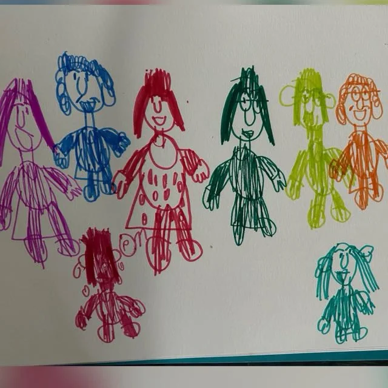
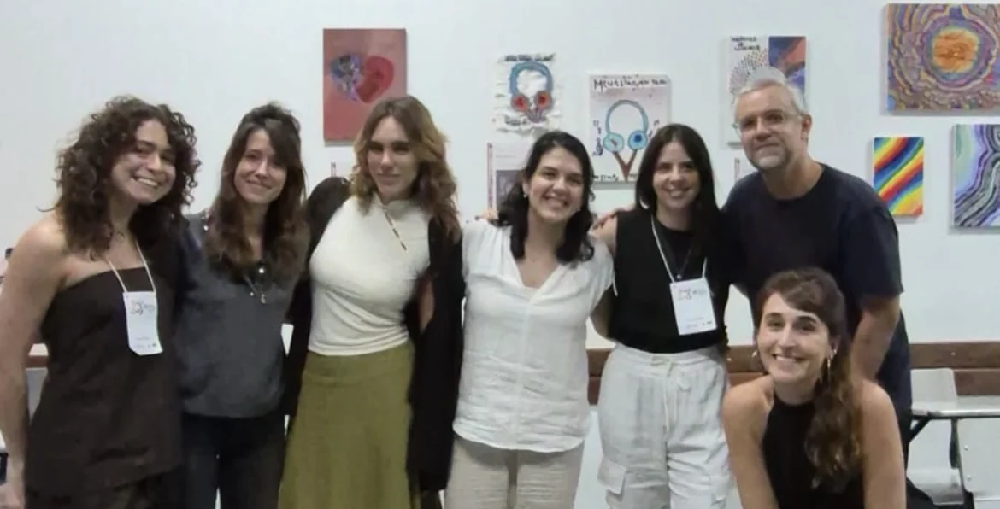

Uma escuta singular
Olhar para cada pessoa, seus gestos e suas possibilidades, para além das dificuldades que a acompanham.
Construindo encontros desde 2012
Psicanálise, arte e encontros.
Um trabalho em grupo que acolhe a singularidade
e abre possibilidades de relação com o mundo.
Cada pessoa, uma forma de estar no mundo.
A nossa proposta
Há muitas maneiras de sentir, se expressar e criar laços.
Na Ponte, cada uma delas encontra espaço.
Olhar para cada pessoa, seus gestos e suas possibilidades, para além das dificuldades que a acompanham.
O grupo como espaço para estar com o outro, construir relações e sustentar a própria presença.
A arte como convite para investigar gostos, descobrir interesses e dar lugar ao que é próprio de cada um.

O grupo
Desde 2012, a Equipe Ponte desenvolve uma proposta clínica orientada pela psicanálise, dirigida a crianças, adolescentes e jovens adultos com impasses no laço social.
O trabalho coletivo acolhe as particularidades de cada participante. Entre escutar, se fazer escutar e partilhar experiências, outras formas de estar junto podem encontrar lugar.
Conversar sobre o grupoAs oficinas
Não é sobre aprender a fazer arte.
É sobre encontrar uma
forma própria de se expressar.
Uma forma de dizer, para além das palavras.
Outros caminhos para fazer a voz aparecer.
Um encontro com o ritmo de cada um.
Dar lugar a outras maneiras de ser.
Preparar, compartilhar, estar junto.
Explore as oficinas
Quem faz a Ponte
Psicanalistas com uma trajetória compartilhada de clínica,
pesquisa e cuidado através do encontro.

A equipe trabalha com análise em consultório, acompanhamento terapêutico e atendimento em grupo — este último, o trabalho específico da Ponte.
Fale com a equipePodemos ajudar
Se a sua dúvida não estiver aqui,
estamos disponíveis para
conversar.
Para crianças, adolescentes e jovens adultos que apresentam sofrimento ou dificuldades significativas nas relações consigo e com os outros. Cada situação é acolhida em sua particularidade.
Não. Os textos da equipe contemplam tanto pessoas que têm um diagnóstico quanto aquelas que vivem dificuldades nos laços sociais sem um diagnóstico fechado. O ponto de partida é a singularidade de cada pessoa.
Não. A proposta é clínica, orientada pela psicanálise. A arte é um meio para favorecer a expressão e o encontro, sem exigir aprendizagem técnica ou desempenho artístico.
Entre em contato com a equipe pelo e-mail equipeponte@gmail.com. Podemos conversar sobre a proposta, a organização dos grupos e os próximos passos.
Na Rua Paris, 656, Sumaré, São Paulo — próximo ao metrô Vila Madalena. CEP 01257-040.
Vamos conversar?
Conte um pouco sobre o que você procura.
A equipe está aqui
para escutar.